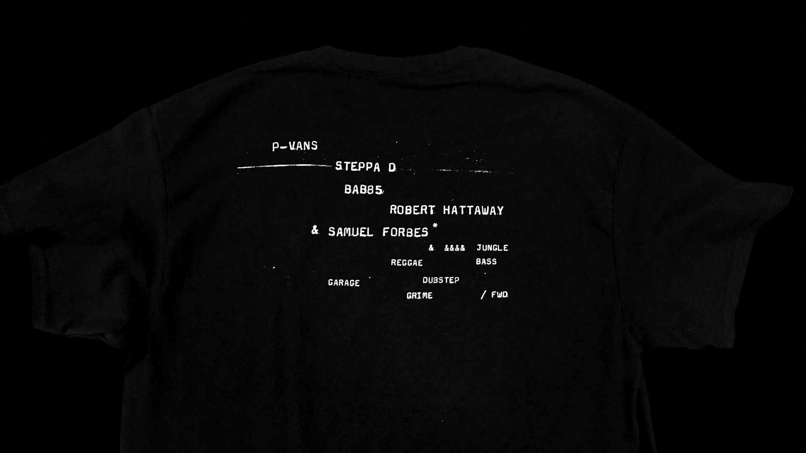
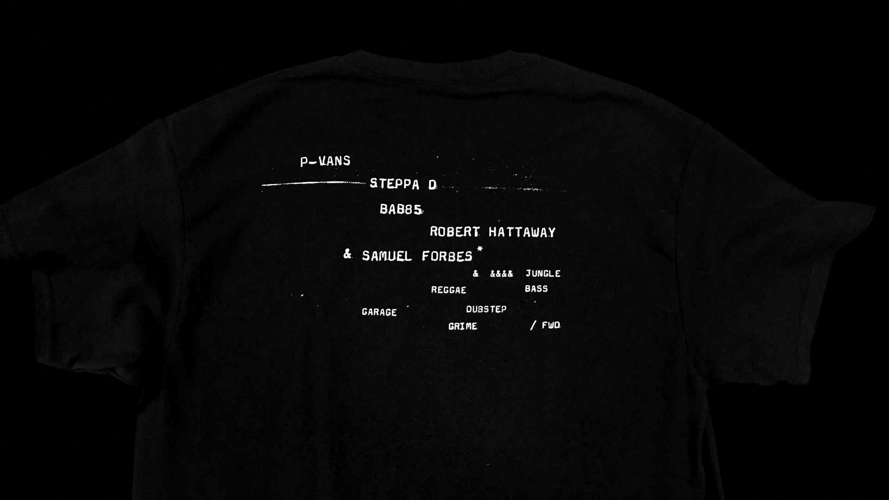

Antipocurean Series, 2018 Invitation to an international chef event for Alliance Group Ltd.


High Definition Dance Music 001, 2017 90x35, Black Riso on 80GSM Eco100

Te Hono, 2017 Journal for the 2017 Primary Sector Bootcamp


Ludicrous Likenesses: The Fine Art of Caricature, 2017 Exhibition identity for The New Zealand Portrait Gallery, in partnership with Johannes Bay
Book Club 2, 2017 A1 Poster

Górnośląska WIP, 2017 → Sandblasted onto Absolute Black Granite


Sine of the Times, 2016 An examination, exploration and speculation on contemporary sound system culture Photographs – Xander Dixon
 


PRESSURE, 2016 → Photographs – Marielle de Geest

SILERE alpine origin merino, 2013 Brand collateral for SILERE alpine origin merino


Stationery refresh for The New Zealand Merino Company Limited, 2011